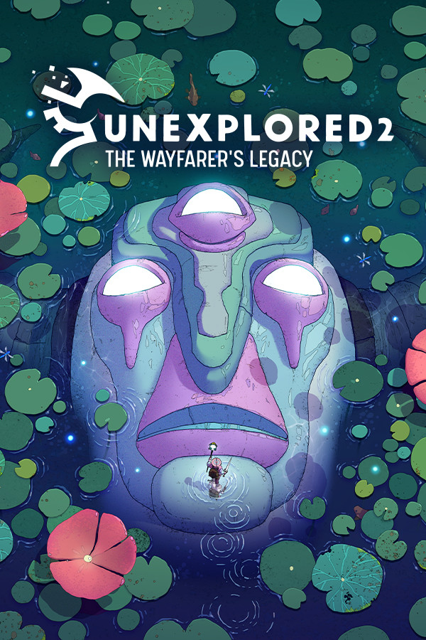

Unexplored 2: The Wayfarer's Legacy
Unexplored 2: The Wayfarer's Legacy
Details
|  | |
| Playtime | Not Played |
| Last Activity | Never |
| Added | 5/28/2022 12:06:48 |
| Modified | 6/11/2022 10:11:06 |
| Completion Status | $Check Out |
| Library | Playnite |
| Source | Wanderer |
| Platform | PC (Windows) |
| Release Date | 5/27/2022 |
| Community Score | 66 |
| Critic Score | |
| User Score | |
| Genre | Adventure Indie RPG |
| Developer | Ludomotion |
| Publisher | Big Sugar |
| Feature | Achievements Cloud Saves Partial Controller Support Single Player |
| Links | Community Hub Discussions Guides News Store Page PCGamingWiki Achievements |
| Tag | [EMT] Logo Missing |
Description

Procedural roguelite RPG in a vast world
Unexplored 2 creates a vast, rich fantasy world for you to discover. It has a cool twist on permadeath: your character may die, but the world might persist. The game is an ambitious, procedural action-RPG without grind, xp, or gold. Instead the story is all about your choices and their consequences as history unfolds.
As the titular Wayfarer you take on the quest to destroy the Staff of Yendor, for which you’ll have to traverse your world. Along the way you’ll meet tribes, encounter magical creatures and explore ancient ruins to discover mythical weapons and historic items.

When you die…
The game is challenging and you will die often. You may make a wrong choice, take on one too many creatures, or forget to stock up on food before traveling a desert. Whatever the reason, when your character dies, they’re gone. No autosaving or quickloading.
However, you can choose to continue your adventures with a new character in the same world, a few years later. Your new character will witness the result of the choices your previous adventurer made. You can leave items in a safe spot, ready for your next Wayfarer to pick up and use.

The world ends
You can try to fulfill your quest to destroy the Staff of Yendor with consecutive Wayfarers in the same world. However, when you die during your final mission, your world ends. Permanently.
So, make sure you are prepared well and know everything there is to know about the last and most dangerous part of your adventure.
When you fail, that world vanishes. The only thing left to do is to generate a whole new world with its own history, and begin the quest anew.

Key features
- Radical content generation: Ludomotion's radical approach to content generation creates many layers of unique content, every time a new world is generated.
- Generative storytelling: Though every Wayfarer's ultimate goal may be similar, every hero will have their own world, story, and encounters.
- Systemic depth: The game features many systems and you will discover something new every time you play, even after hundreds of hours of gameplay.
- Legacy system: Actions of your past heroes impact the fortunes of those that follow in their footsteps. Use your legacy wisely to give your successive adventurers greater hopes of completing their quest.
- Permadeath in a persistent world: When your hero dies, they stay dead. But you can choose to return to the same world with a new Wayfarer. Or, if you prefer, begin a new adventure in a completely unexplored world.
- Unique presentation: The worlds in Unexplored 2 are presented in a unique and beautiful art style, beyond what is conventionally expected from a generative game. A stylish lighting system sets the mood and adapts to the time of day and local weather conditions.
- Orchestral adaptive soundtrack: Your adventure is accompanied by an orchestral, original soundtrack which reacts to the action and decisions you make as a player.